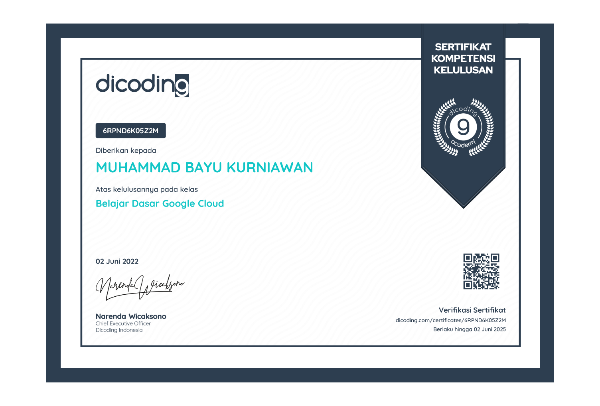

Certificate & Achievement
Saya memiliki pencapaian dan kredensial yang mencerminkan kemampuan saya.


Saya berfokus di bidang teknologi informasi dan saat ini bekerja sebagai NOC Helpdesk di sebuah perusahaan swasta. Dalam peran ini, saya menangani berbagai masalah teknis dan memastikan kelancaran operasional jaringan. Selain itu, saya juga memiliki portofolio di bidang desain logo yang mencerminkan kreativitas dan keahlian teknis saya.
Saya percaya setiap pengalaman adalah pelajaran berharga. Saya selalu berusaha untuk terus tumbuh dan berkembang dalam karier saya, serta terbuka untuk kesempatan diskusi atau peluang kolaborasi!
Saya memiliki pencapaian dan kredensial yang mencerminkan kemampuan saya.
Sebagai Field Engineer di PT Sarana Insan Muda Selaras, saya bertanggung jawab untuk instalasi, perbaikan, dan pemeliharaan infrastruktur jaringan di lokasi proyek. Tugas utama saya meliputi:
Sebagai NOC Helpdesk, saya bertugas memantau dan mengelola jaringan serta sistem TI perusahaan. Merespons dan menyelesaikan masalah teknis yang dilaporkan oleh pelanggan, serta membantu mengatasi gangguan layanan.
Selain itu, saya bekerja sama dengan tim teknis untuk mencari solusi dan memastikan semua sistem berjalan dengan baik. Tujuan saya adalah menjaga agar layanan tetap lancar dan memberikan pengalaman yang baik bagi
pelanggan.
SMK Jurusan Teknik Komputer dan Jaringan mempersiapkan siswa untuk menguasai keterampilan di bidang teknologi informasi, khususnya dalam instalasi, pengelolaan, dan perawatan jaringan komputer. Program ini menggabungkan teori dan praktik, termasuk konfigurasi perangkat keras dan pemecahan masalah teknis. Lulusan siap menghadapi tantangan dunia kerja dengan prospek karir yang baik di sektor IT dan telekomunikasi.